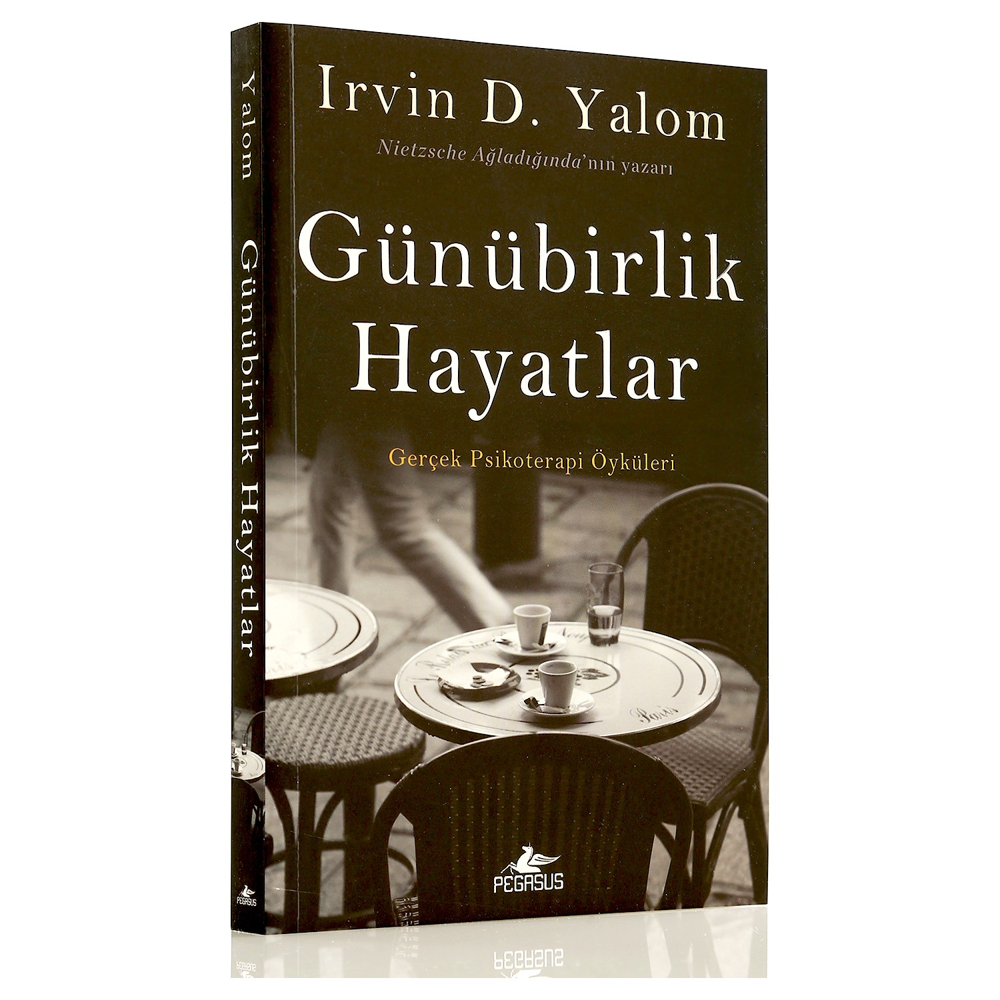

1996 yılında Aksaray'da doğdum. Cumhuriyet Üniversitesi Psikolojik
Danışmanlık ve Rehberlik mezunuyum.
Online olarak danışmanlık hizmeti veriyorum. Evliyim. 15 aylık bir kızım
var.
Psikoloji alanında akademik kitaplar okumayı ve kişisel gelişim kitaplarını severim. Varoluşçu Terapi- Irwin Yalom kitapları favorimdir.

Yalom yıllarca üzerinde çalıştığı bu kısa hikâyelerde hastalarının
mücadelelerini konu ettiği kadar kendi sarsıntılarını da anlatıyor
ve iki önemli sorunun üzerine gidiyor: Kısa da olsa nasıl anlamlı bir
yaşam sürüp her günün tadına varabiliriz?
Ve kaçınılmaz son olan ölüm gerçekten ne ifade ediyor?